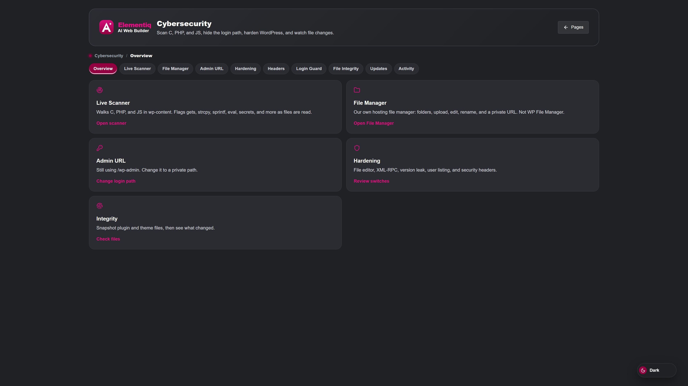

WordPress tools
Elementiq includes security screens next to Pages, Design, and Studio. Scan files, harden common WordPress settings, and open File Manager without installing a separate product. These tools help protect the site you are already building.

Overview for Live Scanner, File Manager, and Admin URL.
Reads files in batches and reports patterns that look unsafe, with file, line, and a suggested next step.
Optionally replace the public /wp-admin path with a private URL. Bookmark it before you log out.
Turn off common surfaces such as the file editor or XML-RPC from one place.
Send browser headers that reduce clickjacking and MIME sniffing on public pages.
Lock an IP after too many failed passwords so brute force attempts slow down.
Snapshot plugin and theme files, see what changed, and review scans and lockouts.